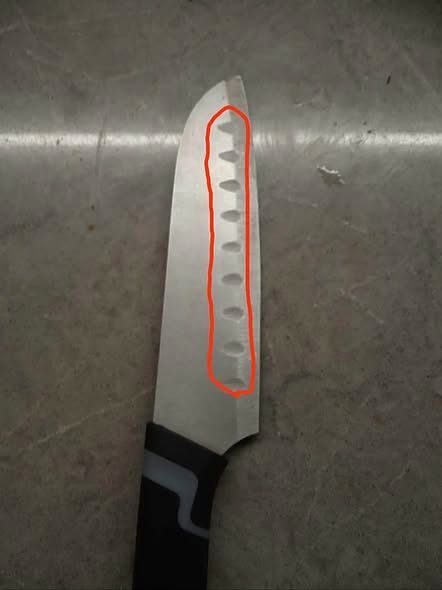

Dụng cụ bếp
Hàng lỗ trên lưỡi dao: không phải để “giảm ma sát” như người bán hay nói

Con dao santoku, dao thái thịt nguội, dao lạng cá hay có một hàng lõm hình bầu dục chạy dọc gần lưỡi. Hỏi người bán thì câu trả lời quen thuộc lắm: “rãnh để giảm ma sát, dao lướt êm hơn chị ạ”. Nghe xuôi tai thế thôi, chứ đây lại là câu nói sai phổ biến nhất về con dao đấy các bác 😜
Em ngày nào cũng thái thái băm băm, có hôm bóc cả chục cân hành, nên tò mò đi tìm hiểu cho ra nhẽ.
Cái rãnh tên là gì, ai nghĩ ra?
Người ta hay gọi là rãnh Granton – mà Granton thật ra là tên một công ty dao ở Sheffield (Anh), đăng ký bằng sáng chế kiểu rãnh này năm 1928. Người Đức có kiểu rất giống, gọi là Kullenschliff. Ở bản gốc, chỗ lõm phải chạm sát xuống lưỡi cắt chứ không nằm cao tít trên thân dao như nhiều con dao bây giờ.
Trên mạng còn lưu truyền chuyện “ông thợ dao Joseph Granton” với mấy con số nghe rất kêu như “tăng hiệu quả cắt 22%”, nhưng tìm mãi chẳng thấy nguồn nào xác nhận có ông ấy hay có con số ấy. Đồ bếp hình như rất hay đẻ ra những nhà phát minh… không có thật 😂
Sai ở chỗ nào?
Ma sát là lực cản khi hai mặt trượt lên nhau. Theo định luật Amontons mà các con học vật lý, ma sát phụ thuộc vào lực ép giữa hai mặt, gần như không phụ thuộc diện tích chạm nhau. Khoét bớt mặt dao cho bớt chỗ chạm thì ma sát chẳng giảm như mình tưởng.
Thứ làm lát khoai tây, dưa chuột, miếng phô mai dính chặt vào dao là chuyện khác: lực hút của màng nước. Lát khoai ướt, phẳng, áp sát mặt dao phẳng, giữa hai mặt là một lớp nước mỏng dính. Muốn gỡ ra thì không khí phải lọt vào được khe ấy, khe càng mỏng không khí vào càng chậm, thế là lát khoai bị “hít” chặt vào dao.
Hai lực khác nhau mà cảm giác trên tay giống nhau – dao nặng, cắt khó – nên người ta gộp chung làm một.
Thế rãnh làm gì?
Rãnh tạo ra những túi khí giữa dao và thức ăn. Màng nước không phủ kín được nữa, không khí có đường chui vào, lát cắt rơi ra thay vì bám theo dao.
Còn ma sát thì rãnh có khi lại làm tăng: thịt, cá mềm ướt lún vào rãnh, vướng ở mép rãnh khi dao trượt qua. Chưa thấy ai đo đếm hẳn hoi mức tăng này, nhưng bảo rãnh “giảm ma sát” thì không có cơ sở.
Có tác dụng thật không?
Có, nhưng ít hơn quảng cáo:
- Bếp thử nghiệm America's Test Kitchen thấy rãnh có ích trên dao thái dài, và còn làm lưỡi dao mỏng nhẹ hơn trong khi sống dao vẫn cứng – một phần cảm giác “lướt êm” là từ đó.
- Giới chơi dao thì nghi ngờ hơn, cho rằng lưỡi mài hơi lồi mới là thứ giúp nhả thức ăn.
- Rãnh chỉ có tác dụng ở vùng có rãnh: củ khoai cao hơn hàng rãnh thì phần trên vẫn dính như thường.
- Mài nhiều năm, lưỡi lùi dần về phía rãnh, đến lúc mép rãnh chạm lưỡi thì lưỡi dao thành răng cưa ngoài ý muốn.
Muốn lát cắt không dính dao thì làm gì?
Xếp theo thứ tự hiệu quả:
- Cách cắt: kéo dao tới hoặc lùi một chút khi cắt thay vì ấn thẳng xuống, tay kia gạt lát cắt ra. Miễn phí mà hiệu quả nhất.
- Dáng lưỡi: mặt dao hơi lồi đẩy lát cắt ra ngay khi cắt.
- Độ sắc: dao cùn ép dập thức ăn, chảy nhiều nước hơn, màng dính dày hơn. Mài dao thường xuyên nhé các mom.
- Rãnh: có ích nhất trên dao thái dài, kéo những nhát dài qua thịt nguội, cá hồi, thịt quay.
Lần sau có người bán dao bảo “rãnh giúp giảm ma sát”, chị em cứ cười hỏi lại: “Giảm bằng cách nào hả anh?” 😜😜😜
Em tham khảo: Ý tưởng từ bài chia sẻ của anh Dinh Phong Nguyen (facebook.com/aaron.amrak); định luật ma sát Amontons; nhận xét thử dao của America's Test Kitchen.
Kinh nghiệm và kiến thức bếp nhà, em viết lại theo cách hiểu của em – không thay lời khuyên của bác sĩ, chuyên gia dinh dưỡng. Thấy chỗ nào chưa đúng, các bác nhắn em sửa nhé.